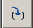

Editor / Debugger / IDE 
ToDo:
Editor, Debugger
You can choose between a simple internal debugger and the full blown external debugger: Winpdb. Both debuggers are based the wonderful debugger rpdb2, created by Nir Aides (who also wrote Winpdb). Below the simple builtin debugger is shown.
On the left-top the flow control buttons (which all have accelerator keys, shown in the hint). Further on the left an overview of the normal local variables, their current value and their history. On the right the multi-tab editor, shown with bookmarks, breakpoints and current line. During breakpoints you can edit the source files, but the changes will only become active after a restart of the debugging process. On the bottom the standard log-command window. The log-command window is fully editable and be stored and reloaded. The log-command window accepts simple commands just like MatLab, e.g. "5+3", but also accepts full rpdb2 commands. Changes made to local variables will effect the current debug session immediately.
Controls and accelerator keys
|
Enable / Disable all Breakpoints. Disabling, first saves the status of all Breakpoints and then disables all the Breakpoints.Enabling restores the previous situation (which is slightly different from winpdb, who enables all Breakpoints, regardless of they were on or off before disabling all Breakpoints) |
||
|
F9 |
Stops a running debug-process. |
|
|
F9 |
Starts a breaked debug-process. |
|
|
F8 |
Single step the debug-process, not going into procedure calls. |
|
|
 |
Ctrl-F8 |
Single step the debug-process, and do enter into procedure calls |
|
Shift-F9 |
Restart |
|
|
Alt-F9 |
Start external winpdb. Before winpdb is launched (with the main-file), all modified editors are saved and the current working directory is set to the path of the main-file. You can have many external debug processes and one internal debug proces at the same time (with different versions of the source code). |
Autocompletion
AutoCompletion List starts upon
|
A .. Z, a .. z |
|
0 .. 9 |
|
_ |
|
Left Arrow |
|
Right Arrow |
|
BackSpace |
AutoCompletion List DOESN'T starts upon
|
Up Arrow |
|
Down Arrow |
AutoCompletion is executed upon
|
. |
AutoCompletion + start next AutoCompletion List |
|
( |
AutoCompletion + insert ( |
|
Enter |
AutoCompletion + insert space instead of EOL |
|
Dbl-Click |
AutoCompletion |
AutoCompletion is NOT executed upon
|
Space |
|
Tab |
Interactive Shell
The Log-Command window can be used as an interactive shell. Text entered on the last line in the Log-Command window will always be evaluated as a command. Other text is assumed to be comment.
Simple commands are evaluated in the namespace of the program debugged. If the internal debugger is not running, simple commands are evaluated in the session namespace (starts empty on start of the program).
Multi-line commands, which will have auto-indent feature, are evaluated after an empty line is added (press Enter twice).
Debugger commands can be launched by starting the last line with ">" or "." :
Breakpoint Statemachine
PDB Notes
Starting pdb, the debugger is launched and will stop at a temporary breakpoint on the first line of the source file:
Breakpoints use human line numbering, starting at 1.
The line at the breakpoint is not yet executed.
Undocumented "whatis"
Random Notes
Python debugger: pdb, based on bdb + cmd
WinPDB: much nicer / faster
|
Ctrl-1..9, 0 Shft-Ctrl-1..9,0 |
Goto BookMark 1..9, 0 Toggle BookMark 1..9, 0 (or click on BookMark Margin) |
|
F1 |
NOT YET: context sensitive help |
|
F2 |
|
|
F3 Shift+F3 Ctrl + F3 |
NOT YET: Find Next (from search buffer) shift-F3 = Find Previous Jump to first error |
|
F4 Shift+F4 |
NOT YET: Find Next from word under cursor shift+F4 = Find Previous This is very handy, when tracing code in the High-Level-language <--> assembler listing. |
|
F5 Ctrl-F5 Shift-F5 |
Toggle BreakPoint ( also Margin-LeftClick ) Change BreakPoint Condition ( also Ctrl-Margin-LeftClick ) Toggle Bookmark ( also Shift-Margin_LeftClick ) |
|
F6 |
|
|
F7 |
NOT YET: Toggle template window visibility |
|
F8 |
NOT YET: Jump to next field (mainly from template insertion) |
|
F9 Ctrl-F9 Alt-F9 |
run NOT YET: run in debugger NOT YET: run in external WinPDB debugger |
|
F10 |
|
|
F11 |
|
|
F12 |
WinPDB, remarks
started 12 august 2008
Syntax Check
30.8 py_compile -- Compile Python source files
This module allows you to explicitly compile Python modules to bytecode. It behaves like Python’s import statement, but takes a file name, not a module name. Example: Using the py_compile module
# File: py-compile-example-1.py
import py_compile
# explicitly compile this module
py_compile.compile("py-compile-example-1.py")
The compileall module can be used to compile all Python files in an entire directory tree.
DivmodPyflakes - Divmod - Trac
Pyflakes is a simple program which checks Python source files for errors. It is similar to PyChecker in scope, but differs in that it does not execute the modules to check them.
PyChecker a python source code checking tool
PyChecker is a tool for finding bugs in python source code. It finds problems that are typically caught by a compiler for less dynamic languages, like C and C++. It is similar to lint. Because of the dynamic nature of python, some warnings may be incorrect; however, spurious warnings should be fairly infrequent.
pylint (analyzes Python source code looking for bugs and signs of poor quality.) (Logilab.org)
analyzes Python source code looking for bugs and signs of poor quality. Pylint is a python tool that checks if a module satisfies a coding standard. Pylint can be seen as another PyChecker since nearly all tests you can do with PyChecker can also be done with Pylint. But Pylint offers some more features, like checking line-code's length, checking if variable names are well-formed according to your coding standard, or checking if declared interfaces are truly implemented, and much more (see the complete check list).
The big advantage with Pylint is that it is highly configurable, customizable, and you can easily write a small plugin to add a personal feature.
Pygments — Python syntax highlighter